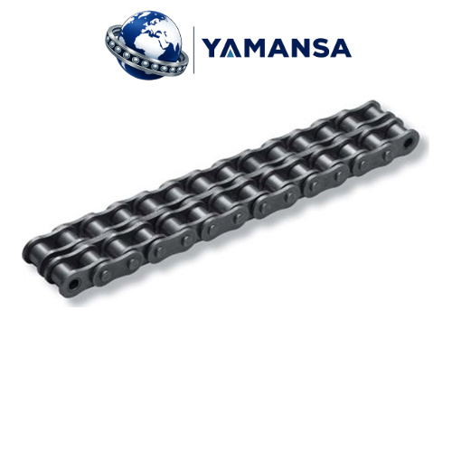

iwis ECOPLUS 12B-2 Çift Sıra Makaralı Zincir 19,05 mm
| DIN ISO Kodu 12B-2 | İnç Kodu 3/4" | Adım 19,05 mm | Sıra Sayısı 2 | Marka iwis |

Teknik Çizim
iwis ECOPLUS 12B-2 Çift Sıra Makaralı Zincir 19,05 mm
Mevcut aktarmadaki 19,05 mm adımı eşleştirmek için iwis ECOPLUS 12B-2 Çift Sıra Makaralı Zincir kodu tam olarak okunmalıdır. Çift sıralı makaralı transmisyon zinciridir. İki veya daha fazla makara sırası ortak pimlerle birlikte ilerler; dişlide aynı sayıda diş sırası gerekir. Adım, ardışık iki pim merkezinin mesafesidir; zincir seçiminin temel ölçülerinden biridir.
Kod ve Ölçü
iwis ECOPLUS 12B-2 Çift Sıra Makaralı Zincir için tam kodun anlamı önemlidir. 12B-2 kodu B serisi ölçüyü ve son ekte sıra sayısını belirtir. Aynı adımlı tek, çift, üç ve dört sıralı seçenekler birbirinin yerine doğrudan takılmaz. Seçimde B harfi ile sıra eki birlikte korunur; yalnız inç adımına göre karar verilmez.
Dişli ve Zincir Uyumu
iwis ECOPLUS 12B-2 Çift Sıra Makaralı Zincir ile çalışacak düzende eşleşecek dişli ve zincir birlikte ele alınır. Dişlinin diş sayısı aktarım oranını, göbek ve mil deliği ise montaj biçimini belirler. Zincir adımıyla birlikte makara çapı, iç genişlik ve sıra sayısı da dişliye uymalıdır. Çok sıralı düzende sıralar arası mesafe, diş sıralarının konumuyla birlikte değerlendirilir. Seçenekler arasında uygun zincir dişlileri incelenebilir.
Bağlantı Parçaları
Bu ölçüdeki iwis ECOPLUS 12B-2 Çift Sıra Makaralı Zincir seçilirken bağlantı elemanının görevi belirleyicidir. Zincir uçları için aynı seri ve sıra sayısında tam kilit kullanılır. Boyu tek adım değiştirmek gerektiğinde uygun yarım bakla ayrıca değerlendirilir. Tam kilit ile yarım baklanın görevleri farklıdır; bağlantı biçimi mevcut zincir ucuyla karşılaştırılır. Karşılaştırma için zincir, bakla ve kilit seçenekleri aynı kod ailesi üzerinden ele alınabilir.
Kullanım Alanları
iwis ECOPLUS 12B-2 Çift Sıra Makaralı Zincir bağlantısını karşılaştırırken kullanım ortamı da seçimde yer alır. Konveyör tahrikleri, paketleme makineleri, tarım makinesi aktarmaları ve genel makine transmisyonları bu ölçü ailesinin kullanıldığı alanlardır. Mevcut dişli düzeni, zincir boyu ve bağlantı şekli uygulama seçiminin başlangıç noktalarıdır. Pim, burç ve makara bölgelerinin düzenli yağlanması hareketli bağlantılardaki aşınmanın takibini kolaylaştırır. Yağın bağlantı aralıklarına ulaşması ve çalışma ortamına uygun olması önemlidir.
Bakım ve Ölçü Kontrolü
iwis ECOPLUS 12B-2 Çift Sıra Makaralı Zincir için bakımda zincir ve dişli bir bütün olarak incelenir. Değişim sırasında zincirin uzamasıyla birlikte diş uçlarının aşınması da incelenir. Millere bağlı dişlilerin aynı düzlemde durması, zincirin yana zorlanmadan ilerlemesine yardımcı olur. Uzama karşılaştırması tek bir pim aralığı yerine birden fazla adım üzerinden yapılır.